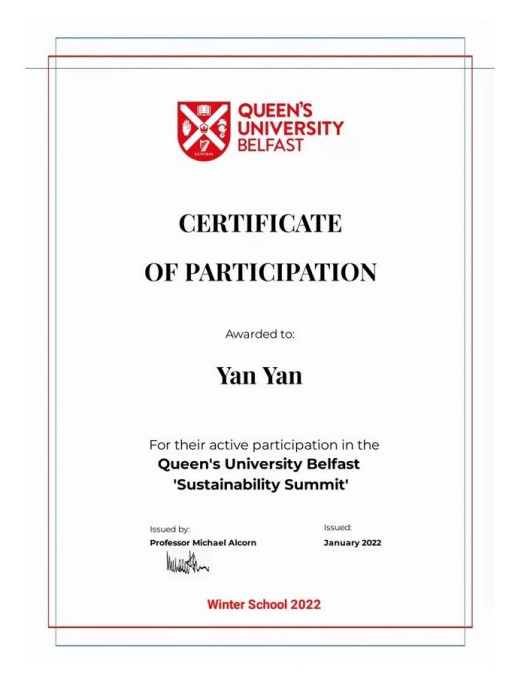

Volunteer Activities
Survey of Deyang Family Farm in Sichuan
Deyang, Sichuan, China
06.2022
- Conducted field research on several modern family farms.
- Conducted online communication with professors and students of Hong Kong Polytechnic University.

JA China, "Finance and Life" Teaching Volunteers
Chengdu, Sichuan, China
03.2022-06.2022
- Imparted financial knowledge to senior high school students

Sustainability Summit Hosted by Queen`s University Belfast
Online
01.2022

N-GEN 2020 Simulated Global Environment Negotiation Youth Summit
Online
11.2020
- Described the measures, suggestions and national responsibilities for biodiversity protection.